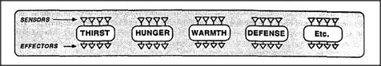
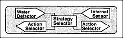
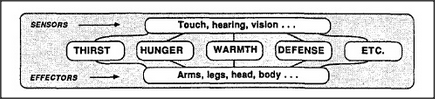

Suppose you had to build an artificial animal. First you'd make a list of everything you want your animal to do. Then you'd ask your engineers to find a way to meet each need.
This diagram depicts a separate agency for each of several basic needs. Let's call them proto-specialists. Each has a separate mini-mind to do its job and is equipped with special sensors and effectors designed to suit its specific needs. For example, the proto-specialist for Thirst might have a set of parts like these:
It would not usually be practical to make an animal that way. With all those separate specialists, we'd end up with a dozen different sets of heads and hands and feet. Not only would it cost too much to carry and feed all those organs; they'd also get in one another's way! Despite that inconvenience, there actually do exist some animals that work this way and thus can do many things at once. Genetically, the swarms of social ants and bees are really multibodied individuals whose different organs move around freely. But most animals economize by having all their proto-specialists share common sets of organs for their interactions with the outer world.
Another kind of economy comes from allowing the proto-specialists to share what they learn. Whether you seek warmth, safety, nutrition, or companionship — eventually you'll have to be able to recognize and act in order to acquire the objects you need. So even though their initial goals are entirely different, all those different proto-specialists will end up needing to solve the same sorts of subproblems — such as finding ways around obstacles and deciding how to conserve limited resources. Whenever we try to solve problems of increasing complexity, whatever particular techniques we already know become correspondingly less adequate, and it becomes more important to be able to acquire new kinds of knowledge and skills. In the end, most of the mechanisms we need for any highly ambitious goal can be shared with most of our other goals.
When a dog runs, it moves its legs. When a sea urchin runs, it is moved by its legs. — JAKOB VON UEXKLL